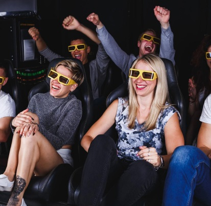

<section class="movie section-gray">
    <div class="container">
        <div class="services__subtitle subtitle">
            <!-- ссылка для прокрутки -->
            <div id="7dcinema" class="anchor-link"></div>
            <h2 class="article-mobile text-black">7D кінотеатр</h2>
            
            <div class="subtitle__article article right">
                <h3 class="article__name text-black">7D кінотеатр</h3>
                <p class="article__text text-black">15 хвилин незабутніх пригод. Нове слово в мультимедійному мистецтві — 7D-кінотеатр — дозволяє повністю зануритися в світ ілюзій і неймовірних відчуттів. Кожен глядач може поставити себе на місце головного героя і насолодитися ефектом повної присутності в фільмі. Глядач може не тільки бачити і чути, але і відчувати пориви вітру або сніжної бурі, дощ і туман, блискавки і землетруси, вібрації і падіння і навіть запахи. Якщо за сюжетом покладається летіти — в цьому допоможуть рухливі платформи, на яких розміщують глядачів.
                    В програму входять два мультфільми на вибір дітей.
                </p>
            </div>
        </div>
    </div>
</section>